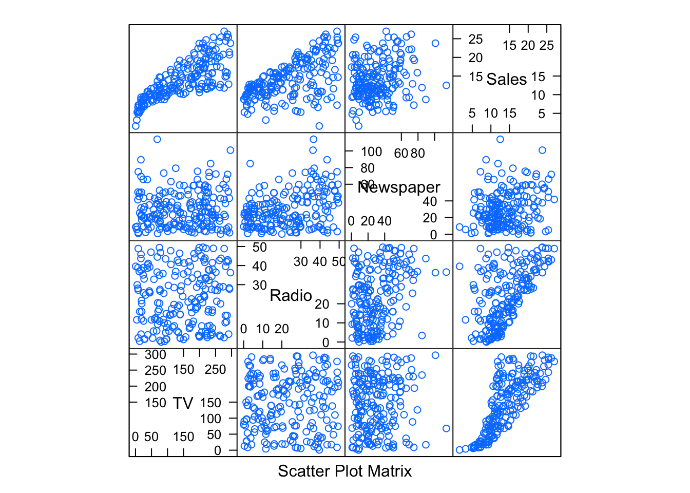
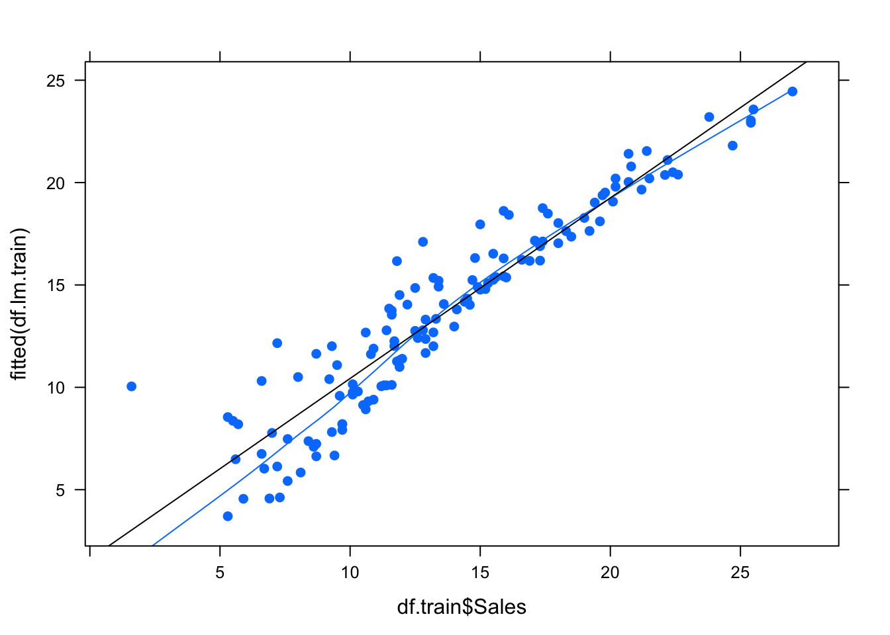
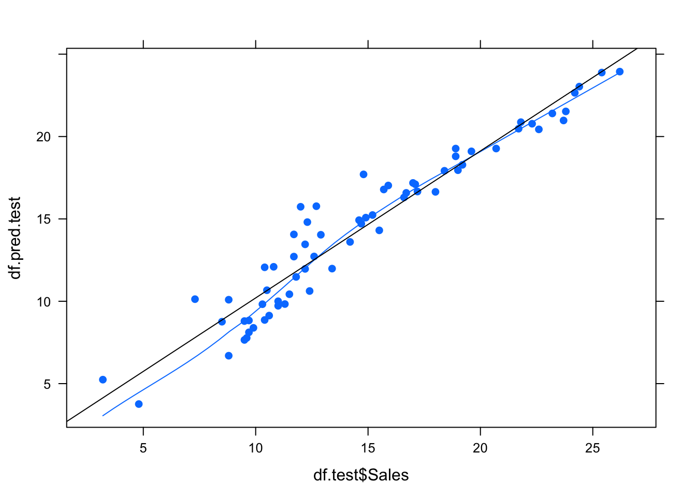
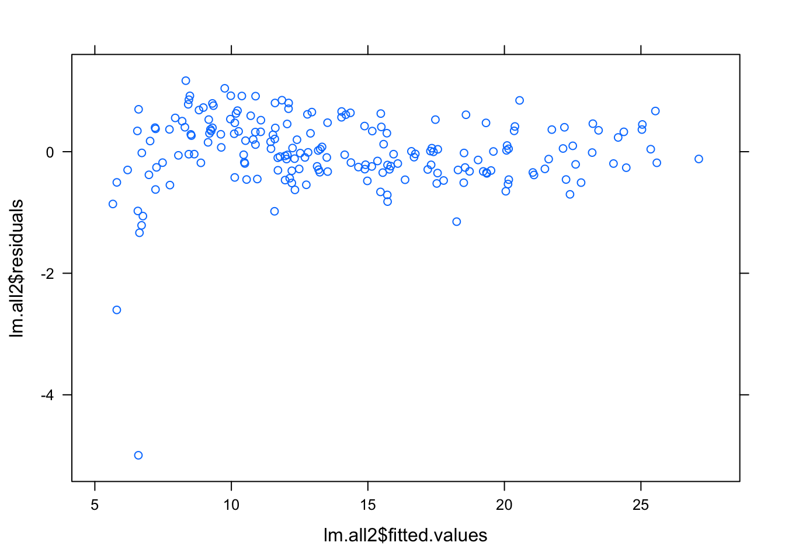
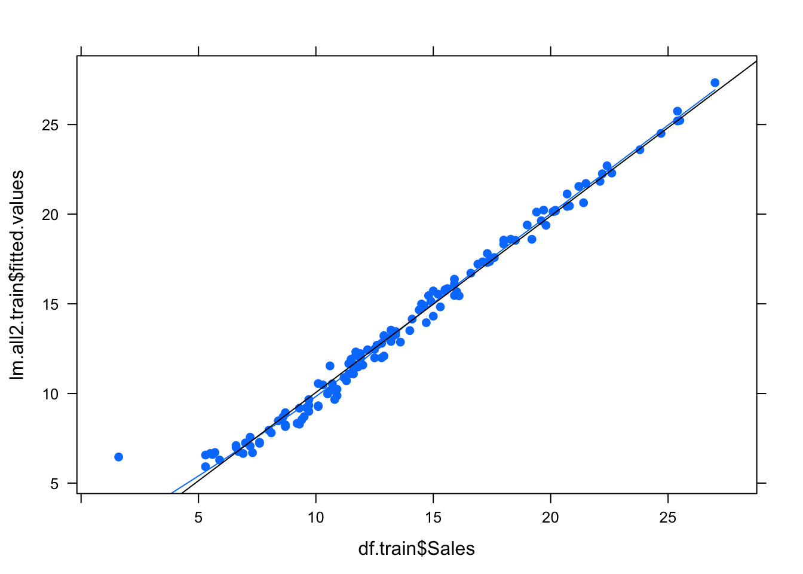
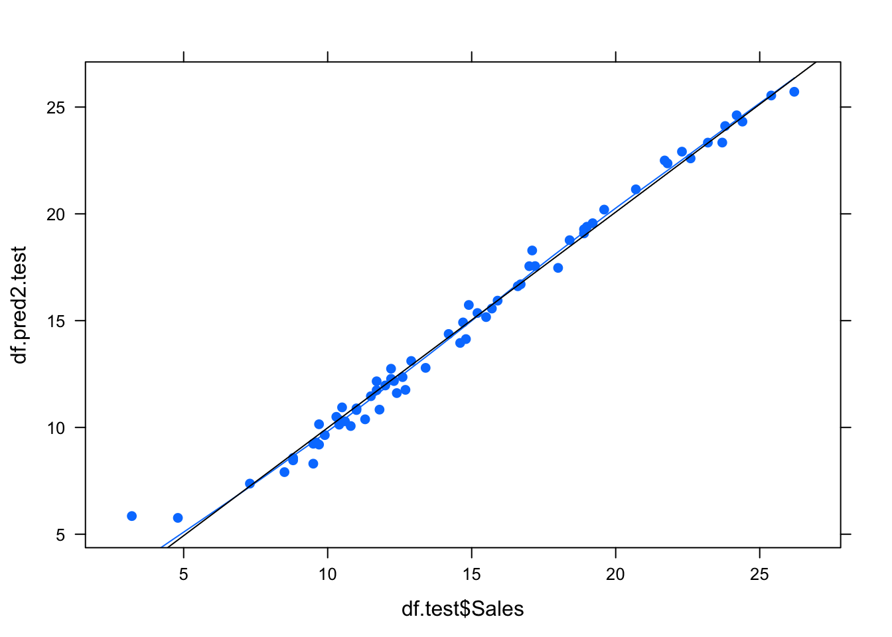

Загружаем данные:
df <- read.csv("data/Advertising.csv", row.names = NULL)
df$X <- NULL
df.size <- nrow(df)
splom(~df)
Строим обучающую и тестовые выборки в отношении 2/1:
indices.train <- sample(df.size, size=df.size*0.6666)
df.train <- df[indices.train, ]
df.test <- df[-indices.train, ]Регрессия на обучающей выборке:
df.lm.train <- lm(Sales ~ ., data=df.train)
summary(df.lm.train)##
## Call:
## lm(formula = Sales ~ ., data = df.train)
##
## Residuals:
## Min 1Q Median 3Q Max
## -8.4457 -0.8185 0.3476 1.2027 2.8942
##
## Coefficients:
## Estimate Std. Error t value Pr(>|t|)
## (Intercept) 2.991405 0.408670 7.320 2.36e-11 ***
## TV 0.046013 0.001760 26.141 < 2e-16 ***
## Radio 0.177001 0.011516 15.370 < 2e-16 ***
## Newspaper 0.001478 0.007069 0.209 0.835
## ---
## Signif. codes: 0 '***' 0.001 '**' 0.01 '*' 0.05 '.' 0.1 ' ' 1
##
## Residual standard error: 1.795 on 129 degrees of freedom
## Multiple R-squared: 0.8819, Adjusted R-squared: 0.8792
## F-statistic: 321.1 on 3 and 129 DF, p-value: < 2.2e-16Предсказание по полученной модели для тестового куска:
df.pred.test <- predict(df.lm.train, df.test)Графички:
panel.custom = function(...) { panel.xyplot(...); panel.loess(...); panel.lmline(...) }
xyplot(fitted(df.lm.train) ~ df.train$Sales, pch=19, panel=panel.custom)
xyplot(df.pred.test ~ df.test$Sales, pch=19, panel=panel.custom)
Видны ошибки на низких значениях Sales в той и другой выборке.
RSS:
rss <- function(r) sqrt(sum(r^2) / length(r))
c(rss(df.lm.train$residuals),
rss(df.pred.test - df.test$Sales))## [1] 1.767965 1.487991Уберем незначительный признак из модели (это были газеты):
df.lm.train.cut <- update(df.lm.train, . ~ . -Newspaper)
df.pred.test.cut <- predict(df.lm.train.cut, df.test)
c(rss(df.lm.train.cut$residuals),
rss(df.pred.test.cut - df.test$Sales))## [1] 1.768264 1.484464Модель стала вести себя немного лучше после удаления незначимого признака: уменьшились ошибки; стало быть он только мешал.
Поудаляем еще чего-нибудь, телевидение, например:
df.lm.train.cut <- update(df.lm.train, . ~ . -TV)
df.pred.test.cut <- predict(df.lm.train.cut, df.test)
c(rss(df.lm.train.cut$residuals),
rss(df.pred.test.cut - df.test$Sales))## [1] 4.436588 3.948546Очень плохо.
Или радио:
df.lm.train.cut <- update(df.lm.train, . ~ . -Radio)
df.pred.test.cut <- predict(df.lm.train.cut, df.test)
c(rss(df.lm.train.cut$residuals),
rss(df.pred.test.cut - df.test$Sales))## [1] 2.974829 3.348490Тоже плохо.
Или удалим вообще все признаки, оставив только сдвиг:
df.lm.train.cut <- lm(Sales ~ 1, data=df.train)
df.pred.test.cut <- predict(df.lm.train.cut, df.test)
c(rss(df.lm.train.cut$residuals),
rss(df.pred.test.cut - df.test$Sales))## [1] 5.144911 5.356311И это тоже плохо.
Это и понятно, после удаления значимых признаков, модель ведет себя сильно хуже.
model <- function(f) {
lm <- lm(f, data = df)
print(summary(lm))
lm <- stepAIC(lm)
print(summary(lm))
print(c(summary(lm)$sigma, AIC(lm)))
lm
}Посмотрим на разные модели. Выше функция, которая строить линейную регрессию, улучшает ее stepAIC, и выводи значение критерия и RSE.
Обычная
lm.default <- model(Sales ~ .)##
## Call:
## lm(formula = f, data = df)
##
## Residuals:
## Min 1Q Median 3Q Max
## -8.8277 -0.8908 0.2418 1.1893 2.8292
##
## Coefficients:
## Estimate Std. Error t value Pr(>|t|)
## (Intercept) 2.938889 0.311908 9.422 <2e-16 ***
## TV 0.045765 0.001395 32.809 <2e-16 ***
## Radio 0.188530 0.008611 21.893 <2e-16 ***
## Newspaper -0.001037 0.005871 -0.177 0.86
## ---
## Signif. codes: 0 '***' 0.001 '**' 0.01 '*' 0.05 '.' 0.1 ' ' 1
##
## Residual standard error: 1.686 on 196 degrees of freedom
## Multiple R-squared: 0.8972, Adjusted R-squared: 0.8956
## F-statistic: 570.3 on 3 and 196 DF, p-value: < 2.2e-16
##
## Start: AIC=212.79
## Sales ~ TV + Radio + Newspaper
##
## Df Sum of Sq RSS AIC
## - Newspaper 1 0.09 556.9 210.82
## <none> 556.8 212.79
## - Radio 1 1361.74 1918.6 458.20
## - TV 1 3058.01 3614.8 584.90
##
## Step: AIC=210.82
## Sales ~ TV + Radio
##
## Df Sum of Sq RSS AIC
## <none> 556.9 210.82
## - Radio 1 1545.6 2102.5 474.52
## - TV 1 3061.6 3618.5 583.10
##
## Call:
## lm(formula = Sales ~ TV + Radio, data = df)
##
## Residuals:
## Min 1Q Median 3Q Max
## -8.7977 -0.8752 0.2422 1.1708 2.8328
##
## Coefficients:
## Estimate Std. Error t value Pr(>|t|)
## (Intercept) 2.92110 0.29449 9.919 <2e-16 ***
## TV 0.04575 0.00139 32.909 <2e-16 ***
## Radio 0.18799 0.00804 23.382 <2e-16 ***
## ---
## Signif. codes: 0 '***' 0.001 '**' 0.01 '*' 0.05 '.' 0.1 ' ' 1
##
## Residual standard error: 1.681 on 197 degrees of freedom
## Multiple R-squared: 0.8972, Adjusted R-squared: 0.8962
## F-statistic: 859.6 on 2 and 197 DF, p-value: < 2.2e-16
##
## [1] 1.681361 780.394099Из нее удалились газеты.
Теперь полиномиальная второй степени:
lm.all <- model(Sales ~ poly(TV, Radio, degree = 2))##
## Call:
## lm(formula = f, data = df)
##
## Residuals:
## Min 1Q Median 3Q Max
## -5.0027 -0.2859 -0.0062 0.3829 1.2100
##
## Coefficients:
## Estimate Std. Error t value Pr(>|t|)
## (Intercept) 13.94780 0.04422 315.449 <2e-16 ***
## poly(TV, Radio, degree = 2)1.0 53.71298 0.62764 85.579 <2e-16 ***
## poly(TV, Radio, degree = 2)2.0 -9.99022 0.62778 -15.914 <2e-16 ***
## poly(TV, Radio, degree = 2)0.1 40.52042 0.62857 64.464 <2e-16 ***
## poly(TV, Radio, degree = 2)1.1 272.58577 8.82370 30.892 <2e-16 ***
## poly(TV, Radio, degree = 2)0.2 0.49390 0.62608 0.789 0.431
## ---
## Signif. codes: 0 '***' 0.001 '**' 0.01 '*' 0.05 '.' 0.1 ' ' 1
##
## Residual standard error: 0.6244 on 194 degrees of freedom
## Multiple R-squared: 0.986, Adjusted R-squared: 0.9857
## F-statistic: 2740 on 5 and 194 DF, p-value: < 2.2e-16
##
## Start: AIC=-182.5
## Sales ~ poly(TV, Radio, degree = 2)
##
## Df Sum of Sq RSS AIC
## <none> 75.6 -182.5
## - poly(TV, Radio, degree = 2) 5 5341.5 5417.1 661.8
##
## Call:
## lm(formula = Sales ~ poly(TV, Radio, degree = 2), data = df)
##
## Residuals:
## Min 1Q Median 3Q Max
## -5.0027 -0.2859 -0.0062 0.3829 1.2100
##
## Coefficients:
## Estimate Std. Error t value Pr(>|t|)
## (Intercept) 13.94780 0.04422 315.449 <2e-16 ***
## poly(TV, Radio, degree = 2)1.0 53.71298 0.62764 85.579 <2e-16 ***
## poly(TV, Radio, degree = 2)2.0 -9.99022 0.62778 -15.914 <2e-16 ***
## poly(TV, Radio, degree = 2)0.1 40.52042 0.62857 64.464 <2e-16 ***
## poly(TV, Radio, degree = 2)1.1 272.58577 8.82370 30.892 <2e-16 ***
## poly(TV, Radio, degree = 2)0.2 0.49390 0.62608 0.789 0.431
## ---
## Signif. codes: 0 '***' 0.001 '**' 0.01 '*' 0.05 '.' 0.1 ' ' 1
##
## Residual standard error: 0.6244 on 194 degrees of freedom
## Multiple R-squared: 0.986, Adjusted R-squared: 0.9857
## F-statistic: 2740 on 5 and 194 DF, p-value: < 2.2e-16
##
## [1] 0.6243688 387.0779608Модель явно улучшилась.
Все же удалим не очень значимый признак:
lm.all2 <- model(Sales ~ (TV + Radio)^2 + I(TV^2))##
## Call:
## lm(formula = f, data = df)
##
## Residuals:
## Min 1Q Median 3Q Max
## -4.9949 -0.2969 -0.0066 0.3798 1.1686
##
## Coefficients:
## Estimate Std. Error t value Pr(>|t|)
## (Intercept) 5.137e+00 1.927e-01 26.663 < 2e-16 ***
## TV 5.092e-02 2.232e-03 22.810 < 2e-16 ***
## Radio 3.516e-02 5.901e-03 5.959 1.17e-08 ***
## I(TV^2) -1.097e-04 6.893e-06 -15.920 < 2e-16 ***
## TV:Radio 1.077e-03 3.466e-05 31.061 < 2e-16 ***
## ---
## Signif. codes: 0 '***' 0.001 '**' 0.01 '*' 0.05 '.' 0.1 ' ' 1
##
## Residual standard error: 0.6238 on 195 degrees of freedom
## Multiple R-squared: 0.986, Adjusted R-squared: 0.9857
## F-statistic: 3432 on 4 and 195 DF, p-value: < 2.2e-16
##
## Start: AIC=-183.86
## Sales ~ (TV + Radio)^2 + I(TV^2)
##
## Df Sum of Sq RSS AIC
## <none> 75.87 -183.857
## - I(TV^2) 1 98.61 174.48 -19.298
## - TV:Radio 1 375.38 451.25 170.742
##
## Call:
## lm(formula = Sales ~ (TV + Radio)^2 + I(TV^2), data = df)
##
## Residuals:
## Min 1Q Median 3Q Max
## -4.9949 -0.2969 -0.0066 0.3798 1.1686
##
## Coefficients:
## Estimate Std. Error t value Pr(>|t|)
## (Intercept) 5.137e+00 1.927e-01 26.663 < 2e-16 ***
## TV 5.092e-02 2.232e-03 22.810 < 2e-16 ***
## Radio 3.516e-02 5.901e-03 5.959 1.17e-08 ***
## I(TV^2) -1.097e-04 6.893e-06 -15.920 < 2e-16 ***
## TV:Radio 1.077e-03 3.466e-05 31.061 < 2e-16 ***
## ---
## Signif. codes: 0 '***' 0.001 '**' 0.01 '*' 0.05 '.' 0.1 ' ' 1
##
## Residual standard error: 0.6238 on 195 degrees of freedom
## Multiple R-squared: 0.986, Adjusted R-squared: 0.9857
## F-statistic: 3432 on 4 and 195 DF, p-value: < 2.2e-16
##
## [1] 0.6237639 385.7185178Еще немного лучше.
tune(lm, lm.default$call$formula, data = df, tunecontrol = tune.control(sampling = "fix"))##
## Error estimation of 'lm' using fixed training/validation set: 4.202117tune(lm, lm.all$call$formula, data = df, tunecontrol = tune.control(sampling = "fix"))##
## Error estimation of 'lm' using fixed training/validation set: 24.66971tune(lm, lm.all2$call$formula, data = df, tunecontrol = tune.control(sampling = "fix"))##
## Error estimation of 'lm' using fixed training/validation set: 0.5984859xyplot(lm.all2$residuals ~ lm.all2$fitted.values)
Получается, что с введением монотонной нелинейности модель улучшилась, уменьшились ошибки и немного снизили излишнюю оптиимстичность в начале графика.
Посмотрим поведение на наших тренировочных выборках:
lm.all2.train <- lm(Sales ~ (TV + Radio)^2 + I(TV^2), data=df.train)
df.pred2.test <- predict(lm.all2.train, df.test)
xyplot(lm.all2.train$fitted.values ~ df.train$Sales, pch=19, panel=panel.custom)
xyplot(df.pred2.test ~ df.test$Sales, pch=19, panel=panel.custom)
Круто, модель стала более лучшей.